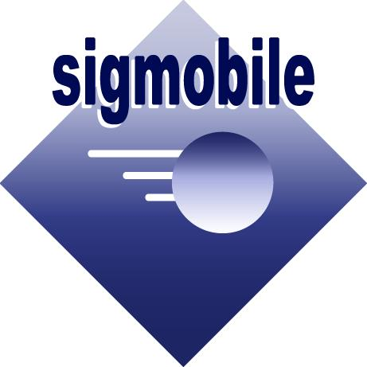
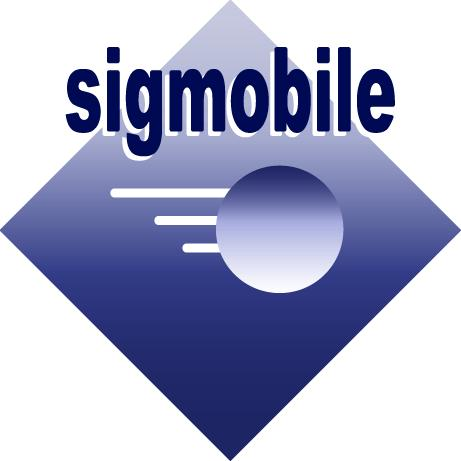

{kind=link}
AFFILIATIONS
| Places I've Studied At |  | ||||||
| People I've Worked With | |||||||
| Causes I Care About |  |
I'm a Research Fellow and Adjunct Faculty at the Singapore Management University (SMU) where I completed my doctoral research advised by Prof. Archan Misra (SMU). My core research interests lie in the areas of mobile and ubiquitous sensing, deep learning for IoT, mobility-driven urban analytics and predictive cyber-physical systems.
In my most recent work, I’m exploring the concept of "Collaborative AI-based sense-making" for resource-limited edge devices (e.g., cameras) where groups of sensors, due to their proximity and shared perspectives of the sensed environment, can cooperate for performance benefits. Previously, I explored the use of localization technology in improving the operations of built environments, both at the indoor-scale and city scale. I have worked on a variety of predictive urban applications (e.g., predicting non-conformant behavior, mobility-on-demand simulations/public transportation, consumer marketing and retail survivability), building on both social and behavioral insights derived from individual and group mobility.
Previously, I was advised by Prof. Cecilia Mascolo at the Computer Laboratory, University of Cambridge (Summer 2017) and by Jenniffer Mankoff and Anind Dey during my exchange at the Carnegie Mellon University, in Fall 2016. My PhD research was generously supported by the A*Star Graduate Scholarship and the Google Women Techmakers Scholarship (APAC).
Contact me at: kasthurij@smu.edu.sg.
| 12/2020 | Our paper titled "The Role of Group Cohesiveness in Targeted Mobile Promotions" has been conditionally accepted to the Journal of Business Research (Special Issue on Mobile Applications)! |
| 10/2020 | I've been selected to participate in the EECS Rising Stars Early Career Workshop, hosted by UCBerkely, this year! |
| 07/2020 | I'm teaching COR1305 Spreadsheet Modeling and Analytics (formerly, Computer as an Analysis Tool) this Fall! |
| 12/2019 | Our paper titled ""Five Challenges in Cloud-Enabled Intelligence and Control" was accepted to the ACM Trans. on Internet Technology. |
| 09/2019 | I was named a Finalist for the Gaetano Borrielo Outstanding Student Award at UbiComp'19. |
| 06/2019 | Our paper titled "Inferring Accurate Bus Trajectories from Noisy Estimated Arrival Time Records" was accepted to IEEE ITSC 2019. |
| 05/2019 | Our paper titled "Resilient Collaborative Intelligence for Adversarial IoT Environments" was accepted to FUSION 2019. |
| 02/2019 | Our paper titled "BuSCOPE : Fusing Individual & Aggregated Mobility Behaviorfor "Live" Smart City Services" was accepted to MobiSys 2019. |
| 10/2018 | Our paper titled "Predicting Episodes of Non-Conformant Mobility in Indoor Environments" was accepted to IMWUT, Vol.2, Issue 4, 2018. |
| 08/2018 | Our paper titled "Exploiting the Interdependency of Land Use and Mobility for Urban Planning" was accepted to the 7th International Workshop on Pervasive Urban Applications (PURBA), co-located with UbiComp'18. |
| 08/2018 | Our paper titled "The Role of Urban Mobility on Retail Business Survival" was accepted to IMWUT, Vol.2, Issue 3, 2018. |
| 07/2018 | I've been awarded the SMU Multidisciplinary Doctoral Fellowship for the academic year 2018-2019. |
| 10/2017 | We are one of the top 5 teams in the DataSpark Open Task Mobility Challenge Finals of the CIKM AnalytiCup !. |
| 08/2017 | Invited to talk at the Computer Laboratory of the University of Cambridge on the topic of "Understanding Urban Events with CrowdSourced Data". |
| 07/2017 | Won the Google Women Techmakers Scholarship. |
| 07/2017 | Attending the Urban Analytics Data Dive at the Alan Turing Institute in London. |
| 07/2017 | Our working paper titled "Role of Group Cohesiveness in Consumers' Responses to Mobile Promotions" was accepted to the Association of Consumer Research Conference, 2017. |
| 05/2017 | Our proposal on leveraging multi-modal sensors for city-scale event detection is through to the Semi Finals at the CIKM AnalytiCup 2017 - Mobility Challenge! |
| 05/2017 | I've been invited to the TPC of the ACM S3 Workshop. Consider submitting! |
| 05/2017 | I'm spending this Summer at the Computer Laboratory in University of Cambridge. |
| 08/2016 | I'm spending this Fall at CMU's Human-Computer Interaction Institute. |
| 05/2016 | Our paper titled "Can Instagram Posts Help Characterize Urban Micro-Events?" was accepted to FUSION 2016. |
| 05/2016 | Our paper titled "Fusing WiFi and Video Sensing for Accurate Group Detection in Indoor Spaces" was accepted to the 3rd Intl' Workshop on Physical Analytics (co-located with MobiSys 2016). |
| 03/2016 | Our paper titled "LiveLabs: Building In-Situ Mobile Sensing & Behavioural Experimentation TestBeds" was accepted to MobiSys 2016. |
| 03/2016 | We are organizing the first ever Women's Workshop at MobiSys'16! |
For a complete list of publications, visit here.
| Reviewer | IMWUT (2017 to 2020 [Special Recognition for Outstanding Review X 1]) |
| ACM CSCW (2019 to 2020) | |
| ACM MobileCHI (2020) | |
| AAAI ICWSM (2020) | |
| ACM Transactions on Internet Technologies (TOIT) (2020) | |
| Elsevier Pervasive and Mobile Computing (PMC) (2020) | |
| Springer Social Network Analysis and Mining (SNAM) (2020) | |
| ACM UIST (2019) | |
| ISWC (2019) | |
| CHI Late Breaking Work (2019) | |
| IEEE Transactions on Mobile Computing (2016) | |
| TPC | ACM IoTDI (2020) |
| ACM MobiSys PhD Forum (2018) | |
| ACM S3 Workshop (2017) | |
| Board Member | Networking Networking Women (2015, 2016) |
| Web Director | ACM SIGMOBILE (2017-) |
| Organizing Co-Chair | 1st MobiSys Women's Workshop (2016) |
| Organizing Committee | UbiComp (2018, Student Volunteers Co-Chair and Web Co-Chair), MobiSys (2016, Web Co-Chair), ICDCN (2016, Webchair), Intl' Workshop on Physical Analytics (2014, Webchair), Fourth ACM Workshop on Mobile Systems for Computational Social Science (2015, Webchair) |
| Student Volunteer | CIKM (2017), MobiSys/ASSET (2016), BCSI (2014) |
| Places I've Studied At | | ||||||
| People I've Worked With | |||||||
| Causes I Care About |  |
Last Updated: 20 June 2020
kasthurij@smu.edu.sg